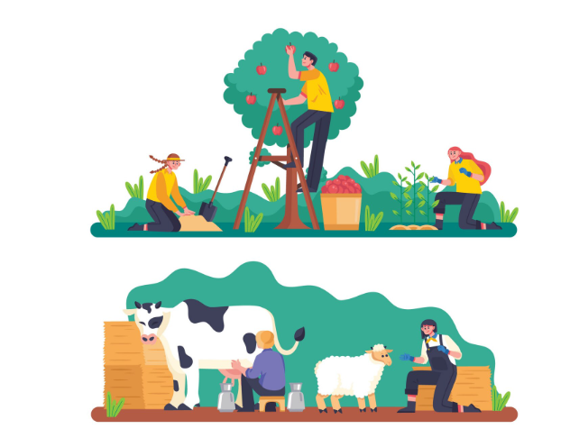
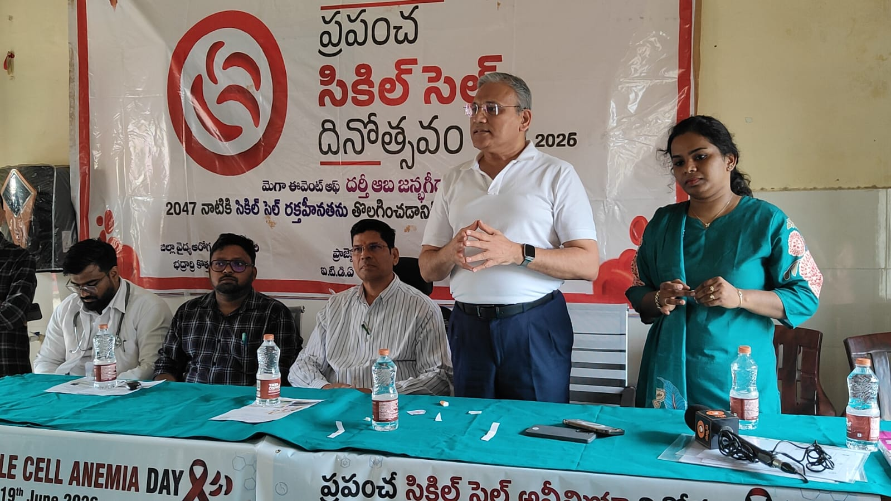
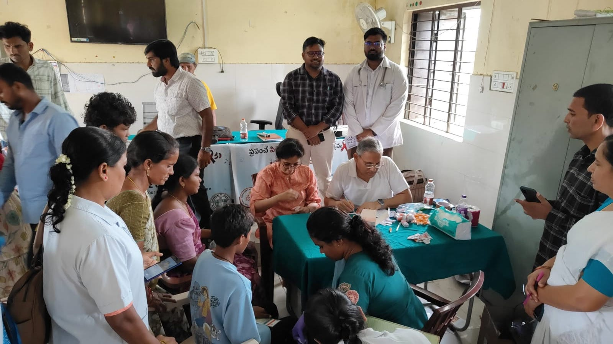
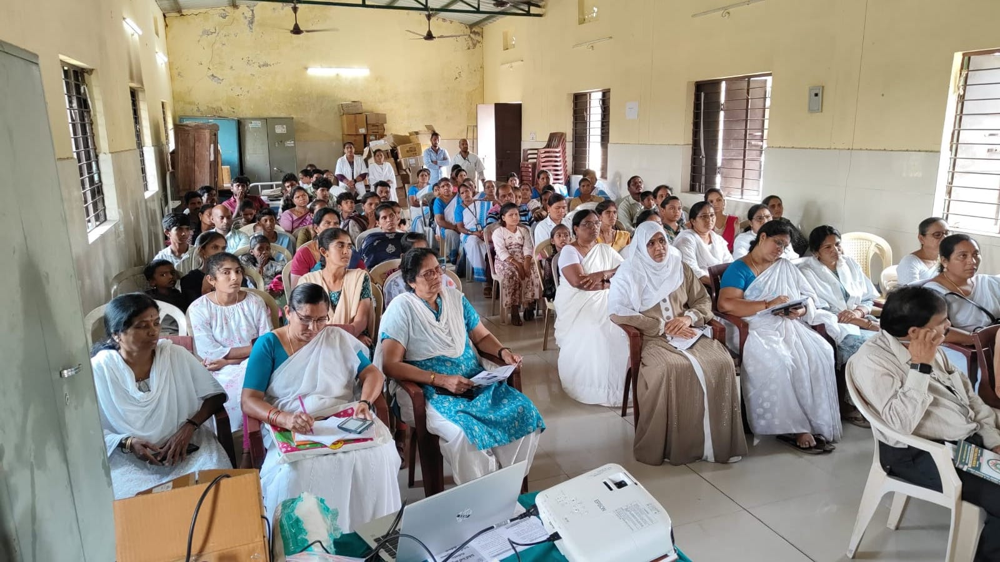
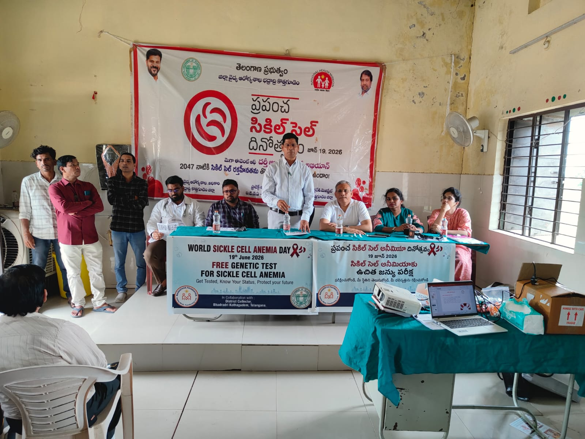
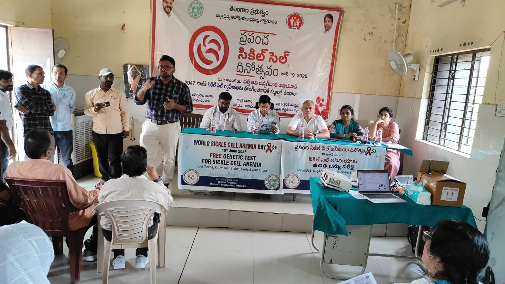
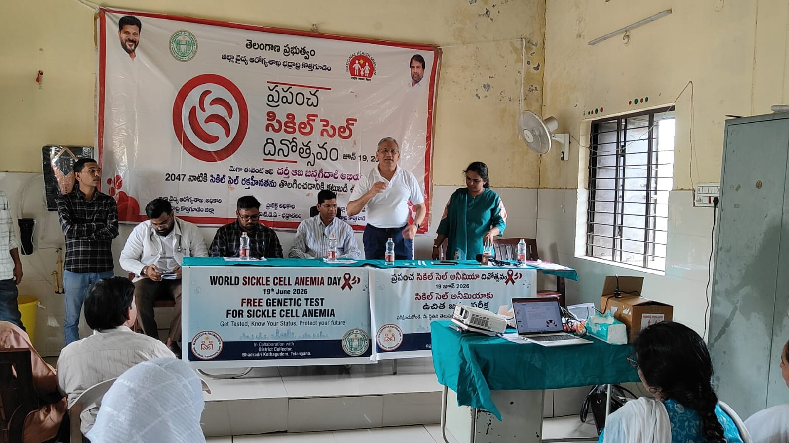
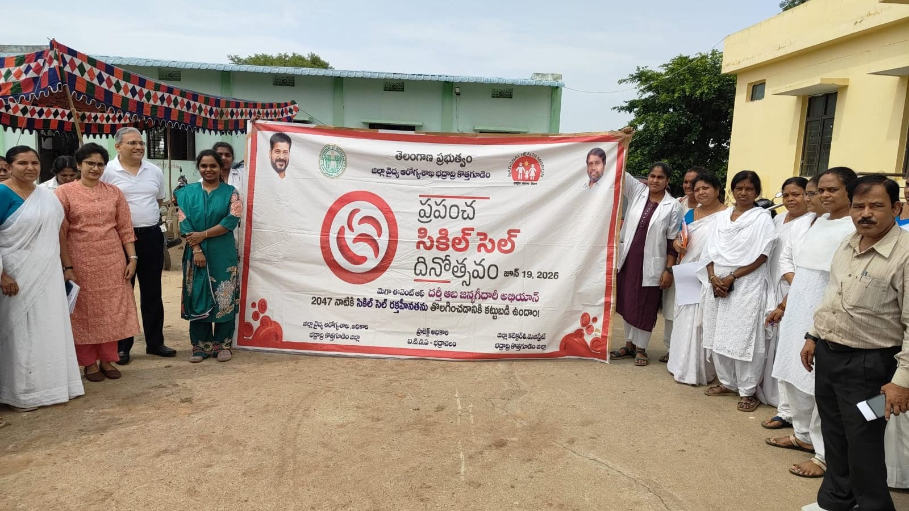
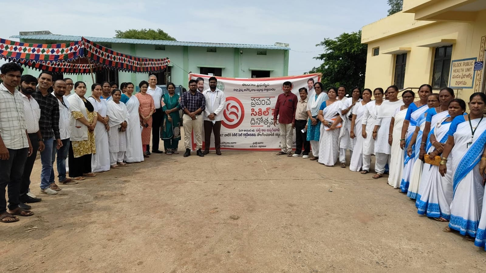

Enhancing the well-being of the underserved — through healthcare, rural development, nutrition, education, and community empowerment.
"Manasthya" — "Manas" (mind) + "Stha" (to reside) — encapsulates the ethos of this foundation.
Manasthya Foundation is a Section 8 Company incorporated under the Companies Act, 2013, with a primary objective of promoting charitable activities.
We strive to enhance the well-being of the underserved and society at large by ensuring access to essential healthcare, fostering rural development and livelihood opportunities, and promoting better nutrition through awareness, education, and capacity building.
Key Areas of Work
Five interconnected program areas creating lasting social impact for those who need it the most.
Organizing health camps, laboratories, and research centres; supporting government healthcare facilities; promoting preventive care. Special focus on Sickle Cell Anaemia, Thalassemia, Diabetes, cardiovascular diseases, and mental health.

Supporting smallholder farmers through financial and technical assistance; promoting regenerative, agroecological farming; facilitating access to seeds, bio-inputs, soil testing, and market linkages for farmer producer organizations.
Promoting safe, nutritious food through sustainable farming practices; supporting dietary diversity, kitchen gardens, and nutrition awareness; working with medical professionals to address malnutrition.
Vocational training, literacy and career guidance, scholarships for students from underprivileged backgrounds — with focus on healthcare, sustainable agriculture, and environmental sustainability.
Financial assistance and essential support — food, clothing, shelter, healthcare — for economically weaker sections, orphans, senior citizens, persons with disabilities, and other disadvantaged groups.
Dedicated to creating lasting social impact through affordable healthcare, nutrition awareness, livelihood generation, and community empowerment.
Founder
Physician-Scientist · Human & Medical Genetics
Dr. Giriraj Ratan Chandak is a physician-scientist with over three decades of experience in Human and Medical Genetics. He established the first genetic diagnostic facility at the Centre for Cellular and Molecular Biology (CCMB) in 1995 and later served as Director of the Centre for DNA Fingerprinting and Diagnostics (CDFD). He pioneered rapid, robust, and affordable genetic testing, prenatal diagnosis, and genetic counselling services that have benefited thousands of patients and families. He has also led major public health initiatives, including the CSIR-Sickle Cell Anaemia Mission, focused on screening, diagnosis, treatment, and counselling for genetic disorders.
Founder
M.A. Economics · PG Rural Marketing & Development
Ashwini Chandak is a Masters in Economics and a Post Graduate in Rural Marketing and Rural Development. He has over 25 years of experience in the development sector and has researched, provided consultancy inputs, carried assessments around sustainable (organic, regen, natural, agroecological) agriculture, food systems, agri businesses and marketing, community based enterprises, farmer producer organizations, agri and allied value chains, non-timber forest produces, inclusive growth, public-private-community partnership for several organizations and projects including, The World Bank, DFID, IFAD, JICA, GIZ, FAO, OXFAM, Swissaid, Heifer, WORLP, APRLP, SERP, OTELP, OFSDP, TBM, The/Nudge, APRIGP, and MACP etc.
Founder
Chartered Accountant · Company Secretary
Abhishek is a Chartered Accountant and Company Secretary with 20+ years of experience. He has worked in large multinational organisations like Pricewaterhouse Coopers (PwC), General Electric (GE), Wipro, SenecaGlobal in leadership positions across different industry sectors viz. consulting, manufacturing, IT services including Start Ups. He was part of CSR committee in some of them and has guided the direction of CSR policies and commensurate initiatives towards CSR programs during his tenure. As part of the leadership team in these companies he was responsible for due diligence and effective implementation.
Newspaper coverage and media features highlighting Manasthya Foundation's programs, outreach events, and community impact.
Snapshots from our outreach camps, community programs, and field activities.








Whether you're a researcher, philanthropic partner, development organization, community representative, or social impact advocate, reach out to discover how we can collaborate to drive sustainable and lasting change.
Address
Indu Aranya Pallavi Apartments, D-206,
Near GSI (Sr) Bandlaguda, Hayathnagar,
Hyderabad – 500068, Telangana
We welcome collaborations in